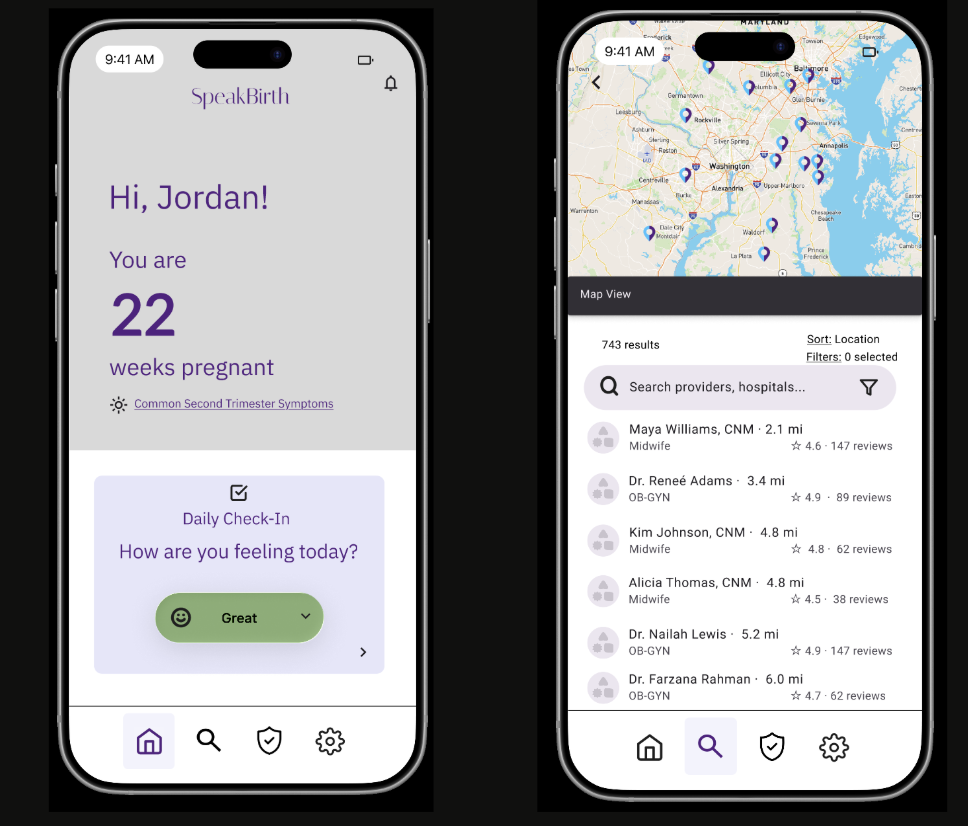
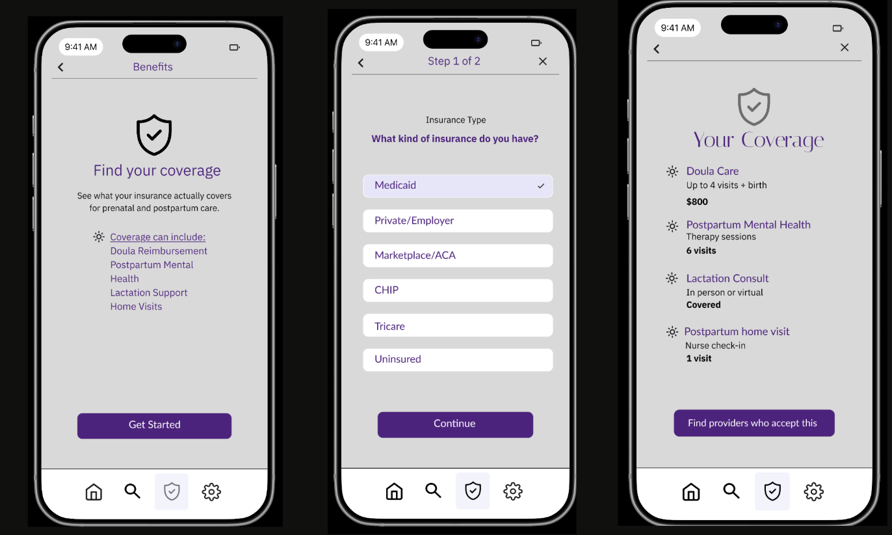
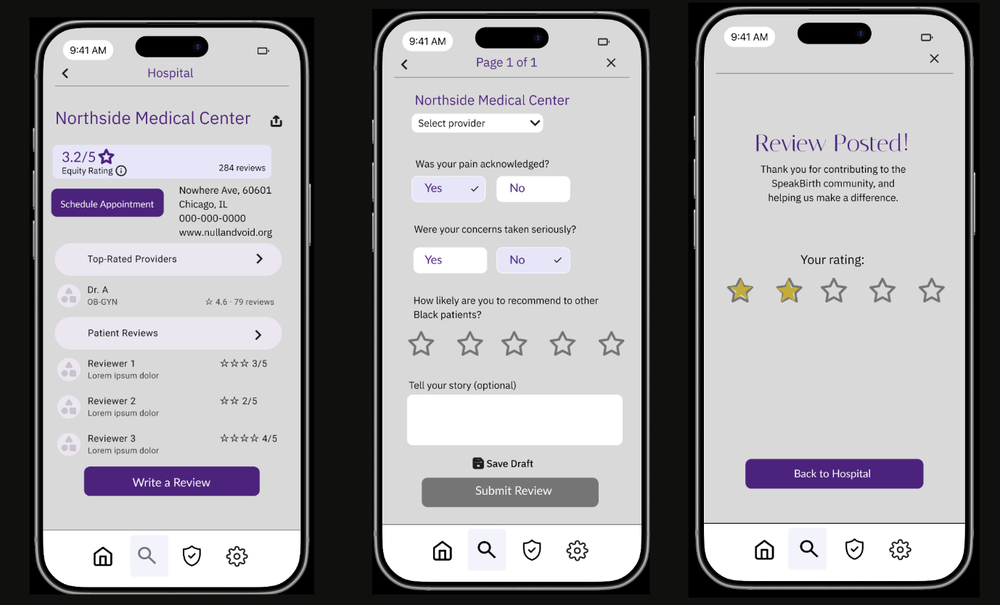

Nielsen's 10 usability heuristics applied to the SpeakBirth prototype.
The SpeakBirth prototype was evaluated against Jakob Nielsen's 10 Usability Heuristics. Each of the three core tasks: provider search, benefits navigator, and equity reviews; were walked through screen by screen, with usability issues flagged and rated for severity on a four-point scale:
Four usability issues surfaced across the three flows. Each is mapped to a Nielsen heuristic and paired with a suggested fix.
The two highest-impact issues; the rural empty state (H5) and the missing draft save (H3) — were prioritized for revision in the next iteration of the prototype. The empty state fix is particularly important because rural Black mothers are a target user group, and a zero-results experience could push them out of the app entirely.
Optional: insert before/after screenshots of the empty state fix


